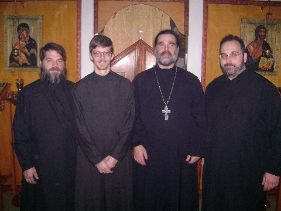

| Pastor: | Priest Seraphim Holland |
| Phone: | (972) 658-5433 |
| Mobile with voice mail: | 972 658-5433 |
| E-mail: | seraphim@orthodox.net |
| MAILING Address: | 2102 Summit, McKinney, TX 75071 |
| Parish Mailing Address: | PO BOX 37, McKinney, TX 75070 |
| Facebook: | Id "Priest-Seraphim Holland" |
| Diocese: | Chicago and Mid-America, ROCOR |
Service Schedule for this month
Schedule for August, 2009 (PDF).
Schedule for August, 2009 (Word DOC).
Schedule for August, 2009 HTML.
Includes all scheduled services/events in our parish, plus commemorations and scripture readings.
2009 Calendar with menaion commemorations, scripture readings, typical services - PDF
2009 Calendar with menaion commemorations, scripture readings, typical services - Word DOC
The year calendar does not have specific services for our parish and is suitable for any Orthodox Christian following the Julian calendar.

Parish Clergy (l-r):Readers Mykael, Nicholas and David with Priest Seraphim
Reader Nicholas will be ordained a deacon in late 2009 or early 2010.
Temple Address:
3617 Abrams, Dallas Texas, 75214-3009
We are in the Lakewood area of Dallas, on the West side of Abrams, a bit South of Mockingbird The church is on the campus of All Saints Episcopal, in white building behind their main building, and totally separate from it. There is an entrance off the alley, and a sign on the door.
We are moving to McKinney this year!

View of our new temple and hall from the North
708 S. Chestnut McKinney, Texas
We will be at the Abrams location until our new temple and hall are built in McKinney Texas. We anticipate moving by late 2009. We are attempting to raise $40,000 in order to have enough cash to complete the project, and put in a beautiful iconostasis. If you wish to donate to our church for this project, or just learn more about it, visit our building fund page.
Directions (current location):
- Take 75 (Central Expressway) to Mockingbird. Mockingbird is about 5 miles south of 635.
- Turn East onto Mockingbird to Abrams. On the Northwest corner of Abrams and Mockingbird, there is a shopping center with a Tom Thumb grocery store, and on the SE corner, (which you will see if you look straight ahead and to the right a little)
- there is a large "TCBY" (The World's best Yogurt)sign.
- Turn South onto Abrams.
- Head south on Abrams a short distance past the first stop light.
- You will see Thomas Aquinas Catholic Church on your right (West side). Go past this, and their football field.
- Immediately following is All Saints Episcopal, on the right (West) side of Abrams (3617 Abrams).
- Turn right at All Saints (there are two entrances), and find the alley.
- We have a separate building, with an entrance off the alley, and a sign on the door.